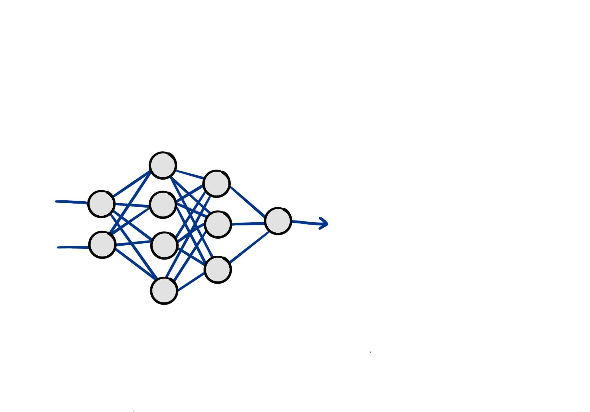
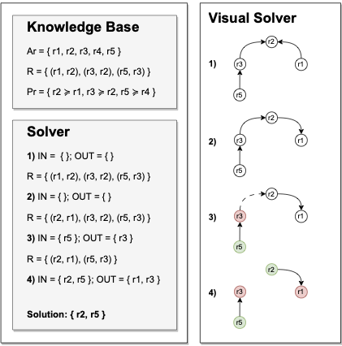
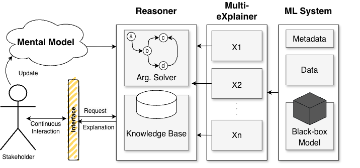
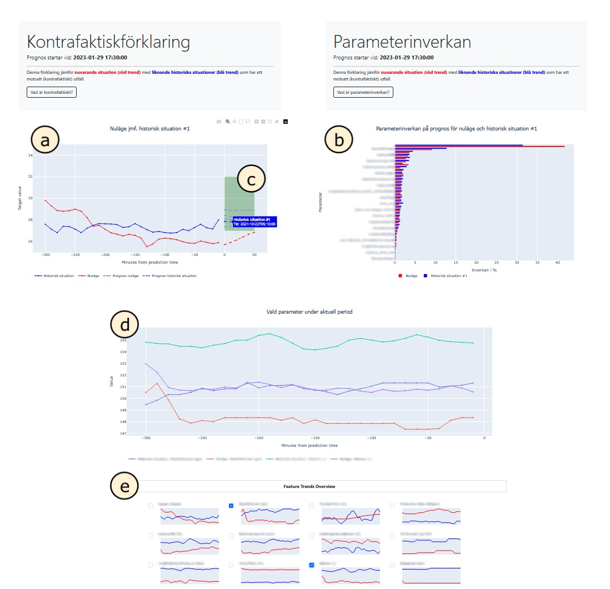
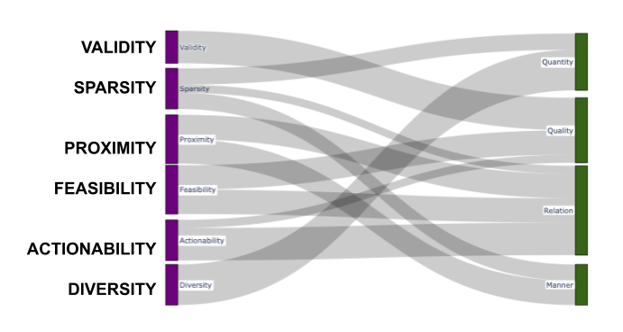
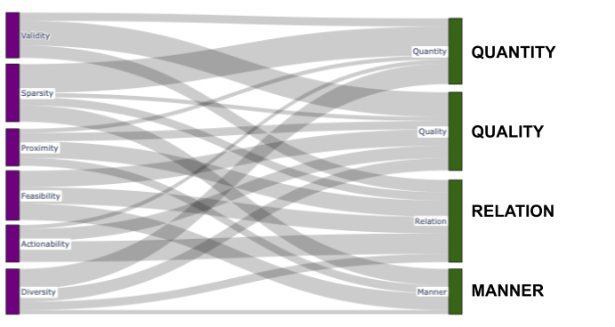

Here is a box.
I cannot tell you what is in the box,
and perhaps you don’t think it even matters, its just a box.
But what if I tell you this box is the only thing getting in between you and the next big step
in your career.
All you need to do is feed in your CV and—in the blink of an eye—you find out … that you will not be
considered for
the role.
Well, why not? You thought your CV was excellent and the role was fitting. Is there anything you
could have done differently? If the decision-maker were human, perhaps you would get an explanation,
but this is just a box
… a black box, which is a term often attributed to complex AI systems...

like deep neural networks …
And while people argue whether these black-box systems will make our professions obsolete, their
deployment across society has already influenced people’s lives greatly.
AI systems involve social and technical elements that interact with each other.
They are sociotechnical systems.
All sociotechnical systems are subject to what is called the sociotechnical
gap.
Sociotechnical gap
The divide between what we know we must support socially and what we can support technically.
- Ackerman
Sociotechnical gap is what Ackerman calls the divide between what we know we must support socially
and what we can support technically.
We are in an age where decisions are made about people’s lives by AI, without sufficient
understanding for how and why AI makes those decisions. This lack of understanding is also for those
who design, build, and deploy them. There is a social demand to answer such questions for the broad
spectrum of stakeholders—non-technical and technical alike—.
E XPLAINABLE
ARTFICIAL
INTELLIGENCE
and it is what the field of EXPLAINABLE ARTIFICIAL INTELLIGENCE or XAI responds to
XAI supports
Applicant: learn why application was rejected
Auditor: assess
if system is discriminatory
Developer: debug why strong applicants are overlooked
Here is a topic that can support different people with different needs:
you as an applicant may get an explanation for why your application was rejected
an auditor may be interested in ensuring the explanation for your rejection was not
discriminatory,
an AI developer may want to debug why their AI system for screening
applicants is suddenly overlooking strong candidates.
Feature Importance
If we consider the job application case again:
the developer trying to debug the system may turn to a feature importance method.
A feature importance like SHAP shows how each feature influences outcomes.
For instance, it may be that years of experience is the most important feature.
Feature Importance
An auditor may raise concern with name being a factor at all in the decision.
Especially if the only change necessary to flip the outcome is to change your name from Jane to Jim.
A different example might tell you that you need two more years of experience, which is
perhaps reasonable for the role.
Counterfactual
And this is what counterfactual explanations show. How the example must change in order to bring
about an alternative outcome.
In this case, what it takes to push your datapoint over the decision boundary.
XAI supports
Applicant: learn why application was rejected
Auditor: assess
if system is discriminatory
Developer: debug why strong applicants are overlooked
I quickly learned that most explainability tools catered more to the technical stakeholders than
non-technical ones
Technical stakeholders are more equipped to interpret the explanations generated by most XAI
methods and can apply them to their technical—often machine learning—work.
RQ1
How are explainability tools applied across domains?
[RQ1] The first investigation in my PhD challenged this perspective and asked how explainability
techniques are applied across domains / or rather … disciplines.
Approach
Structured literature review if the Variable Autonomy robotics community and their consideration
for both transparency and explainability.
[Approach] To do this, we conducted a structured review of the variable autonomy robotics
literature, which provided a particularly interesting lens to look through:
Variable Autonomy System
One in which control can be traded between a human operator and a robot by switching between
different Levels of Autonomy.
- Chiou et al.
in variable autonomy robotics, the human and machine team up to achieve a shared goal. Control over
decision-making is variable and can be passed to and from the respective human and machine team
members. The importance of passing control and the importance of trust in this teaming dynamic makes
explainability and how to achieve it very interesting.
The human stakeholder and their needs take up a lot of space in this scenario.
We found that in robotics, the choice for operationalising explainability depends greatly on the
overarching mission of the team and the application domain.
Depending on who needs an explanation, what needs explanation and why an explanation is needed,
the how can be determined.
These are all contextual cues that I have found are important to consider when interpreting
explanations.
RQ2
How, if at all, can we select explainability tools based on contextual elements?
[RQ2] With consideration for the fact that different stakeholders have different needs for an
explanation, we asked more broadly about XAI: How, if at all, can we select explainability tools
based on contextual elements?
Approach
Propose formalisation of explainer choice with computational
argumentation .
Argumentation is a way to represent and reason about arguments in AI.

Semantics to determine accepted arguments.
computational argumentation is a way to represent and reason about arguments: you have many reasons
why you may choose to employ a particular method, and
perhaps even reasons against. Such conflicts are represented as attack relations.
The argumentation semantics chosen will determine which arguments are acceptable and therefore which
methods are best suited for the context.

We developed a conceptual framework consisting of the AI system, the numerous methods that can be
used to explain its output, and the reasoner component that decides which explanation to generate
and present to the stakeholder.
Transparency into explainability?
[Partial Answer?] What we found most interesting was that argumentation supported transparency into
the choice of explainer. It isn’t the first thing I think about when choosing how to explain → to be
transparent about the choice.
So then why is it important?
Because explanations can be misinterpreted, which then misleads. Downstream decisionmaking is
impacted by the explanation offered.
AI outputs influence mental models, but so do the explanations that accompany them.
Interactivity and social elements become important to consider.
The mental model element of our conceptual framework becomes very interesting and important, because
the user’s mental model will be shaped both by what the AI model outputs, as well as what the
multi-explainer reasoning system .
Interactivity really held my attention throughout my research, and I recognised that it was an
important element to consider in relation to the social aspects that Tim Miller and colleagues
rightfully pushed within the field of XAI already a decade ago.
Miller et al. warn of inmates running the assylum
call on XAI researchers to engage with the social sciences.
Explanations are contrastive, selected, and social .
They warn that the inmates were running the assylum, meaning datascientists are developing
explainers for themselves.
And call for more engagement with social science research.
They show that explanations are contrastive, they are selected, and they are social.
This stuck with me in all my work, especially the work done in collaboration with industrial and
academic partners across Europe: the EXPLAIN project.
EXPLAIN asked how we might
design and develop interactive XAI for the process industries.
EXPLAIN asked how we could design and develop interactive Explainable AI (XAI) for the process
industries. In my thesis, I ask more generally…
RQ3
How can we incorporate the social and interactive
elements of explainability using existing methods?
[RQ3] How can we incorporate the social and interactive elements of explainability using existing
methods?
Approach
Human-centric design
Interactive dashboard prototype
Contextual inquiry
[Approach] Together with my EXPLAIN colleagues and their dedicated expertise, we focussed on a
particular use case from the pulp and paper process industry.
We took a human-centric design approach to the development of prototypes of our solutions. We met
our most important stakeholders- the process operators who are also domain experts- at their
workplace.
We conducted interviews with them about their daily work, how AI fits in the picture, and what kind
of pain points they have around AI introduced in their daily work.
AI suggestions often did not align with their own mental models
historical examples to be important
for how they
explain current scenarios in order to decide on how to adjust parameters of the process.
Counterfactuals were used in combination with feature importance.
[Partial Answer?] Contextual Inquiry revealed that operators had a difficult time trusting AI tools
because the suggestions often did not align with their own mental models.
They would have done something different in the given scenario, so they trust their own expertise
over machine predictions.
When asked about how they would decide on next steps given some scenario, they mentioned looking
back on historical data that share similarities with the current one to gain an understanding of
what is happening and how to take corrective action.
These interviews were valuable to us in crafting requirements for our proposed XAI solution. It is
clear that the operators rely on examples to gain understanding, so counterfactual explanations,
which I introduced earlier, can be one example-based approach to try, especially considering their
work involves taking corrective action to bring the process back to a desirable state--contrastive
information can mirror this task.

The interactive dashboard I built presented counterfactual explanations in the form of multiple
“nearest neighbour” data points from historical data. These nearest neighbours can be selected to be
explored further.
We saw that the operators engaged with counterfactuals well, grasped the concept easily, and
reported that they think counterfactuals, in combination with feature based attribution methods, can
support their understanding of AI predictions in their work.
This evaluation was based on targeted user studies with our domain experts, who gave us an
impression of how well certain explanations perform in a very specific use case.
Not all explainability methods evaluated with human subjects.
Are all explainability methods evaluated this way? No. In fact, the lack of human-subject
participation in the evaluation of explanations has been criticised within XAI. Quantitative
evaluations of counterfactuals in particular remain popular.
For example, in my explainer’s selection of explanations to present to operators, validity was an
important metric – it had to actually produce the desired contrasting outcome, and proximity was
important, the counterfactuals should resemble the original scenario as closely as possible.
Validity
Sparsity
Proximity
Diversity
Feasibility
These are two metrics from a list of many that continue to grow. And while looking at these metrics
in relation to how Miller and colleagues have reported humans tend to explain …
Miller et al. warn of inmates running the assylum
Explanations are contrastive, selected, and social .
I wondered more deeply about how social elements are captured.
We often explain in conversation
Grice's Cooperative Principle
In particular, Miller and colleagues discuss how explainability is a conversation, and reports on
social science research that use the pragmatic theory of Grice’s Cooperative Principle.
Grice's Maxims of Conversation
Quantity : be as informative as required
Quality : be truthful
Relation : stay relevant
Manner : be clear, brief, and orderly
If you are not familiar with Grice’s Cooperative principle, it is comprised of what are called
maxims of conversation. Grice says that participants in conversation follow the following maxims
when they intend to cooperate in the exchange:
RQ4
What relationships exist between the common evaluation practices of XAI and conversational
maxims posed by pragmatics theory?
And I became curious how Gricean maxims contributed, if at all, to the assessment of explanation
quality.
[RQ4] So I investigated what relationships exist between the common evaluation
practices of explainable artificial intelligence and conversational maxims posed by pragmatics
theory.
Approach
Focus group study with computer scientists and social scientists.
Discussed if parallels could be drawn.
[Approach] I did this by talking to peers in computer science, as well as peers in the social
sciences with a focus on AI and its impact on society. I conducted two focus group studies where we
discussed Grice’s maxims, counterfactual explanations, and discussed if parallels could be drawn.
Mappings look similar across focus groups.
But it is not so clean cut.


On top of the guided discussion, I conducted an exercise in mapping maxims to descriptions of
quantitative metrics. First, we did this individually, then we collectively discussed and presented
an aggregated “vote” of where maxims and metrics connected. What was captured and reported on was
the aggregated view.
[Partial Answer?] The answer there could be a signal there, but it is messy and we could do with
more evaluation metrics that are shaped directly by maxims. This was a very interesting exercise,
because while it may have seemed forced at face value, a similar pattern could be observed across
both focus groups. The variation, especially in the second focus group, demonstrates where
interpretations amongst participants open up. It proved to be a difficult exercise, and I could not
find a clean mapping. Which is not entirely surprising in the end.
Critique of technosolutionism puts things into perspective
While I did not dedicate a research question to the final research contribution I will share with
you today, it contributes greatly to the open questions I had around connecting quantitative and
qualitative concepts.
Together with my colleagues in Philosophy, Computer Science, and Systems Safety research, we looked
at the promise that big tech had around “aligning” large language models to human values for AI
safety using techno-centric solutions like Reinforcement Learning from Human Feedback,
Reinforcement Learning from Human Feedback (RLHF)
Learn a reward model from human preference, and use it to steer another model towards high-reward
outputs.
which takes into consideration which texts human annotators prefer in a post-training step and
learns a reward model from that data for fine-tuning language models.
Helpful? Harmless? Honest?
Some humans' values favoured over others.
Provides an illusion of alignment and safety
Our critique highlights that such approaches to alignment will necessarily favour some human’s
values over others — and it tends to be western ideals and values that are considered and captured.
Even when the human annotators themselves are not situated in the west, they tend to provide
preference data that they believe aligns with the western values of their employers, further
reinforcing those values disproportionately.
Amongst other critiques highlighted in this work, we emphasise how technical solutions like RLHF for
alignment do more for providing an illusion of alignment. It improves the language and
anthropomorphises these systems in a way that becomes very convincing for users, even when the
output is flat out false.
Mirrors my struggle with XAI research
Crafting 'human-friendly' explanations with too many assumptions may do more harm
than good.
I found that this mirrored a lot of my struggle with XAI research —
realising that crafting ‘human-friendly’ explanations without enough scrutiny and collaboration
across disciplines risks crafting explanations that are convincing, but do not provide enough
context to be appropriately interpreted and therefore may do more harm than good.
We cannot cram
complex social concepts
into neat technical boxes .
This collaboration helped me come to terms with the complexities of my 4th research question — we
cannot cram complex social concepts into neat technical boxes, but we can explore their
relationships and decide where we need to focus and do better moving forward.
Pluralism is perhaps ... good?
Relevant social groups: a diverse set of relevant social groups con-
tribute to the social construction process.
Interpretive flexibility: technologies are open to multiple possible in-
terpretations given the many relevant social groups.
Closure: the event of having converged to a consensus regarding techno-
logical definitions or designs through “stabilisation”, resulting in a “disappearance of problems”
[193]